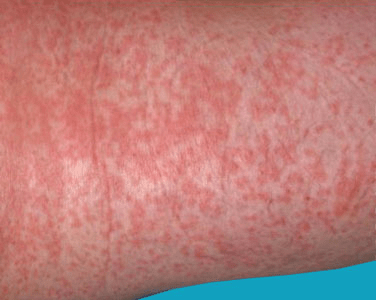
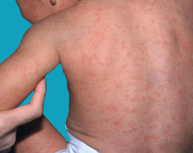

German measles, also known as rubella, is a viral infection that causes a red rash
on the body. Aside from the rash, people with German measles usually have a fever
and swollen lymph nodes. The infection can spread from person to person through
contact with droplets from an infected person’s sneeze or cough. This means that
you can get German measles if you touch your mouth, nose, or eyes after touching
something that has droplets from an infected person on it. You may also get German
measles by sharing food or drinks with someone who’s infected.
German measles is rare in the United States. With the introduction of the rubella
vaccine in the late 1960s, the incidence of German measles significantly declined.
However, the condition is still common in many other parts of the world. It mainly
affects children, more commonly those between 5 and 9 years old, but it can also
occur in adults.
German measles is typically a mild infection that goes away within one week, even
without treatment. However, it can be a serious condition in pregnant women, as it
may cause congenital rubella syndrome in the fetus. Congenital rubella syndrome
can disrupt the development of the baby and cause serious birth defects, such as
heart abnormalities, deafness, and brain damage. It’s important to get treatment
right away if you’re pregnant and suspect you have German measles.

